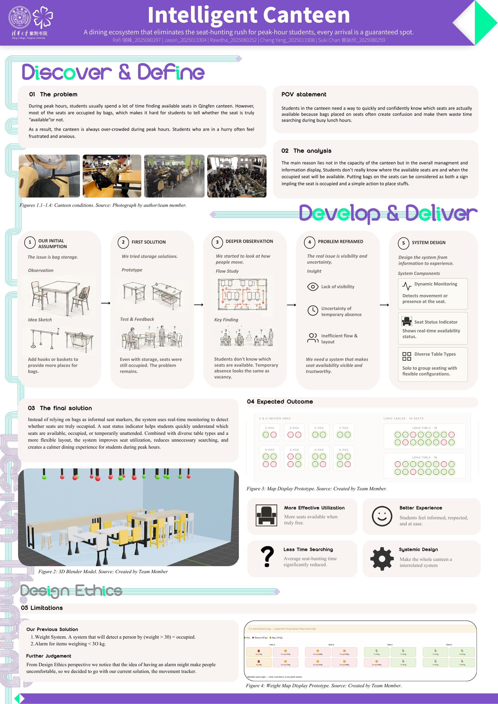

Design Thinking · 2026Research
Qingfen Canteen — the Intelligent Canteen
Why are the seats never free at peak hours? We followed students, reframed the problem from “storage” to “visibility,” and prototyped a live seating system.
Open project →